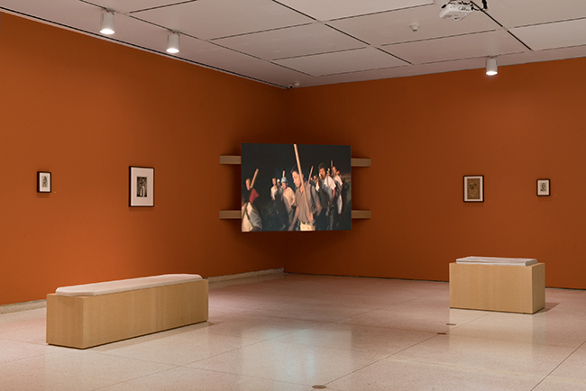

ELI HARRELL
Exhibition Design for The Metropol Drama
a computer ~ 3D project
As a curatorial assistant to Geof Oppenheimer, I developed this design for the Smart Museum exhibition entitled The Metropol Drama. This design built on Kendra Thornbugh-Mueller's work as the previous assistant.
click images to view them at full size.
|
Southwest view of exhibition. Chen Xiaoyun's Night—2.4KM (2009) is projected. exhibition photography by Robert Chase Heishman |

 |
| My bench cushioning design and construction drawings. |

|
|
Southeast view of the exhibition. Babylonian coil money and City of Berlin 20,000 Mark bond in bottom right vitrine. |
|
| Exhibition furniture design sketches and gallery measurements. |

|